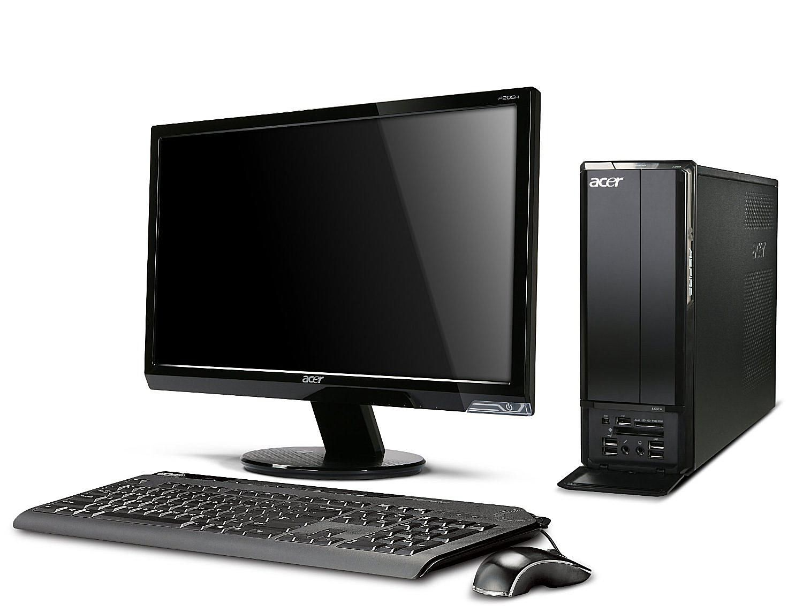

Tentang Blog

Blog ini menjelaskan tentang dasar-dasar teknologi yang sedang trending di Indonesia. Dengan blog ini diharapkan para masyarakat Indonesia menjadi melek teknologi dan terus berkembang dalam memahami teknologi. Blog ini dibentuk secara statis, artinya konten yang terdapat pada blog ini tidak dapat diubah kecuali mengedit langsung file HTML pada web ini.
Konten yang akan direncanakan pada blog ini antara lain: Teknologi PC (Personal Computer), Teknologi Jaringan Komputer, Teknologi Cloud Computing, dan Teknologi VOIP (Voice Over IP).
Blog Terkini

Penjelasan Teknologi PC
Komputer pribadi atau personal computer (PC) adalah istilah untuk komputer yang banyak diketahui orang pada umumnya sehingga banyak orang yang tak akrab dengan bentuk komputer selain komputer pribadi. Hanya orang-orang tertentu saja yang memakai istilah ini secara eksklusif untuk menunjukkan istilah yang lebih spesifik dan tepat. Komputer pribadi diperkenalkan pertama kali di Indonesia pada tahun 1980 oleh almarhum Eddy Liew, pendiri Dragon Computer & Communication melalui merek Sinclair yang berasal dari Inggris.
Penjelasan Teknologi Jaringan Komputer
Jaringan Komputer adalah hubungan antara 2 atau lebih komputer melalui proses komunikasi sehingga mereka dapat bertukar informasi dan data. Dengan jaringan komputer maka pertukaran data dapat menjadi lebih efisien karena melalui jalur komunikasi khusus.

Penjelasan Teknologi Cloud Computing
Cloud Computing atau yang terjemahannya adalah Komputasi Awan adalah sebuah sistem dimana kita mengakses sebuah perangkat yang terdapat di Internet melalui penyedia layanan Cloud Computing. Kelebihan dari sistem Cloud Computing dibandingkan dengan Komputer server konvensional adalah aksesbilitas yang lebih tinggi karena Server yang terdapat di Cloud letaknya lebih dekat dengan Internet dibandingkan dengan Komputer server Konvensional. Terdapat beberapa penyedia layanan Cloud Computing antara lain: Google Cloud Platform, Amazon Web Services, Azure Cloud, Alibaba Cloud, dan Oracle Cloud Infrastructure.
Penjelasan Teknologi VOIP
Teknologi Voice Over IP atau VOIP merupakan layanan suara yang ditransmisikan melalui protokol IP. Jika sebelumnya layanan telepon disalurkan melalui layanan telepon kabel atau jaringan GSM/CDMA, maka layanan telepon ini dapat ditransfer melalui Internet. Contoh penerapan dari teknologi ini adalah WhatsApp Voice Call, dan Skype. Banyak cara untuk menerapkan teknologi VOIP pada server kita. Salah satu perangkat lunak yang bertugas menjadi VOIP Server adalah kamailio.
Lokasi Kami